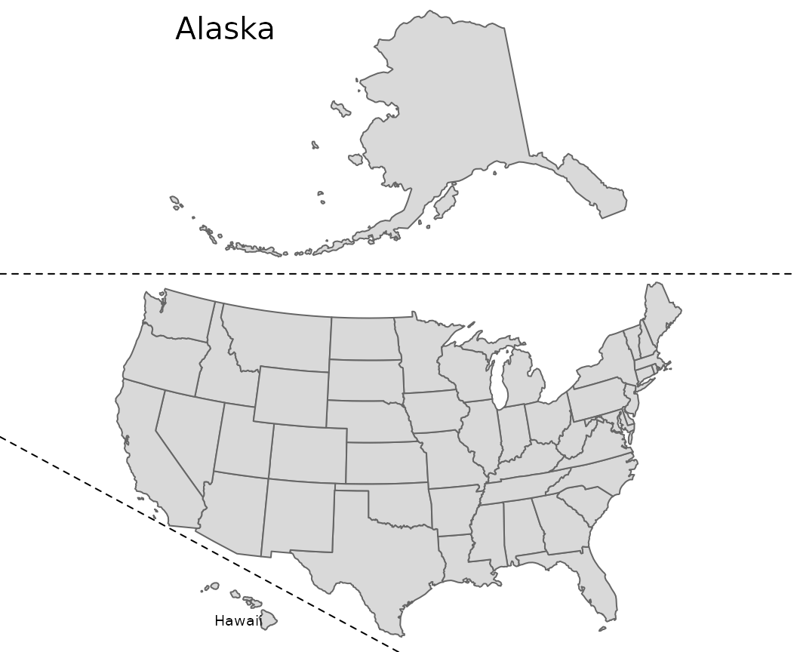

vignettes/us-map.Rmd
us-map.RmdThis vignette provides a detailed description of inset map generation, building on the content in Section Inset maps of the Geocomputation with R book.
The first step is to decide on the best projection for each individual inset. For this case, we decided to use equal area projections for the maps of the contiguous 48 states, Hawaii, and Alaska. While the dataset of Hawaii and Alaska already have this type of projections, we still need to reproject the us_states object to US National Atlas Equal Area:
The second step is to calculate scale relations between the main map (the contiguous 48 states) and Hawaii, and between the main map and Alaska. To do so we can calculate areas of the bounding box of each object:
us_states_range = st_bbox(us_states2163)[4] - st_bbox(us_states2163)[2]
hawaii_range = st_bbox(hawaii)[4] - st_bbox(hawaii)[2]
alaska_range = st_bbox(alaska)[4] - st_bbox(alaska)[2]Next, we can calculate the ratios between their areas:
In the third step, we need to create single maps for each object. We can use the tm_layout() function to get rid of map frames and backgrounds or to add titles to our insets:
The final step is to arrange the map. One of the ways to achieve this goal is to use the grid package. In the code below, we create a new page and specify its layout with two rows - one smaller (for Alaska) and one larger (for the contiguous 48 states). Next, we populate the layout with maps of Alaska and the contiguous 48 states add a map of Hawaii to the bottom left of the map and specify its size. Lastly, we draw two dashed lines (gp = gpar(lty = 2)) to separate the contiguous 48 states from Alaska and Hawaii.
grid.newpage()
pushViewport(viewport(layout = grid.layout(2, 1,
heights = unit(c(us_states_alaska_ratio, 1), "null"))))
print(alaska_map, vp = viewport(layout.pos.row = 1))
print(us_states_map, vp = viewport(layout.pos.row = 2))
print(hawaii_map, vp = viewport(x = 0.3, y = 0.07,
height = us_states_hawaii_ratio / sum(c(us_states_alaska_ratio, 1))))
grid.lines(x = c(0, 1), y = c(0.58, 0.58), gp = gpar(lty = 2))
grid.lines(x = c(0, 0.5), y = c(0.33, 0), gp = gpar(lty = 2))
The result map is just an approximation, not a perfect representation, of relationships between the partial maps – their location and size. In the same time, it is an improvement upon a standard map of United States, which either shows only the contiguous 48 states or largely reduce the size of Hawaii and Alaska.
Alternative approach to this problem can be found at https://github.com/Nowosad/us-map-alternative-layout.